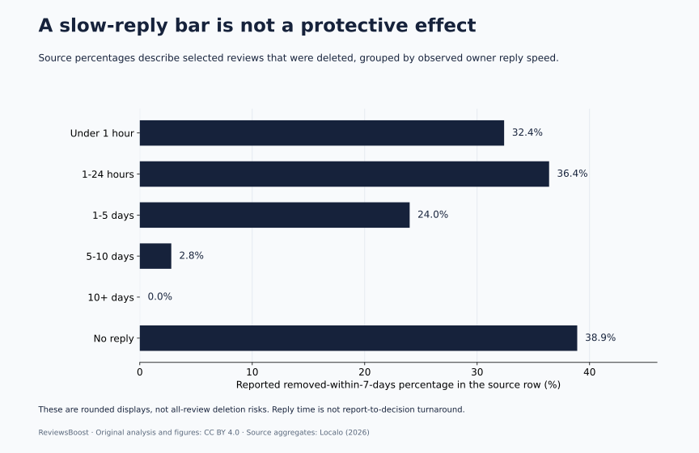
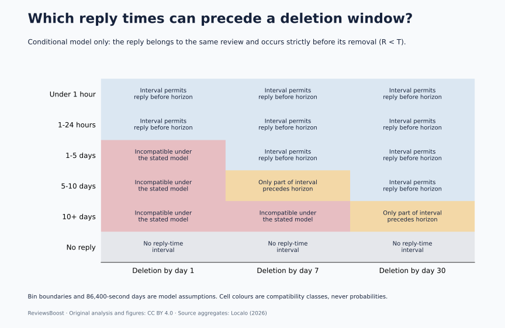
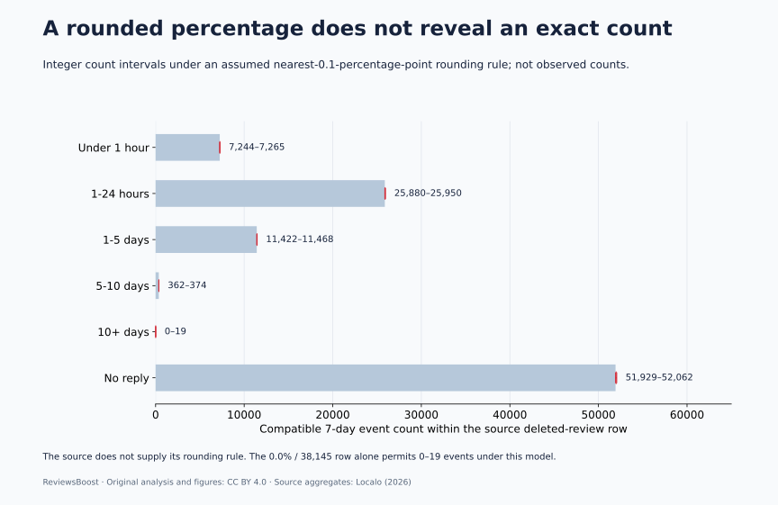

If a review was replied to after ten days, what can its history tell us about removal within its first seven days? Under the explicit assumption that the reply happened before the recorded removal of that same review, it could not have been removed inside that earlier window. That ordering issue matters before anyone treats a slow-reply group as evidence of protection.
Our compilation joins six published reply-speed rows to 18 conditional timing cells and six rounding-compatible count calculations. It adds a formal event-order check, reusable data and three original graphs. It is not a new survey, a causal experiment or a measurement of ReviewsBoost clients.
Should you delay a reply to stop Google from removing a review?
This evidence does not justify that strategy. Google’s reply guidance encourages useful, timely responses. A response is a communication to customers; a review report is a separate policy-based request. Neither a prompt reply nor a delayed reply is shown by this analysis to cause a particular removal outcome.
Localo itself cautions against a causal reading of its reply-speed pattern. We build on that caution rather than present it as our discovery. Our contribution is to make a further time-order constraint testable and to quantify what the displayed percentages do—and do not—identify.
The six published cohorts we audited
Localo’s May 2026 publication contains this reply-speed table within a broader study of deleted reviews. Its stated overall study size is 335,520 reviews and 22,292 profiles, observed across multiple countries and industries. We preserve the six row labels, counts, creation-to-removal medians and seven-day percentages.
| Reply speed | Source reviews | Median review age at removal | Removed within 7 days |
|---|---|---|---|
| Under 1 hour | 22,390 | 49 days | 32.4% |
| 1-24 hours | 71,196 | 19 days | 36.4% |
| 1-5 days | 47,687 | 50 days | 24.0% |
| 5-10 days | 13,142 | 167 days | 2.8% |
| 10+ days | 38,145 | 311 days | 0.0% |
| No reply | 133,664 | 20 days | 38.9% |



The table does not supply a starting population of every review posted. A row’s seven-day share describes the timing of deletions among its selected reviews, not the chance that a newly posted review will be deleted. “No reply” describes the source classification; it does not establish every future interaction that could have happened.
Separate reply delay, review age and report processing
| Measure | Start | End | Question it answers |
|---|---|---|---|
| Reply delay | Review creation | Owner reply | How long before a public response? |
| Review lifespan | Review creation | Observed removal | How old was content when it disappeared? |
| Report processing | Report submission | Platform decision | How long did a report take to assess? |
A twenty-day-old review can be reported on day nineteen. A decision on day twenty would not imply a twenty-day reporting queue. Similarly, replying on day ten is not the same action as reporting on day ten. Keeping the clocks distinct prevents a study of content age from becoming an advertised service deadline.
The source definition for lifespan is creation to removal. We do not have its individual reply/removal timestamp pairs, boundary conventions or complete event histories. The next section therefore states the ordering assumption instead of treating it as a verified feature of every record.
The event-order constraint: reply first, removal later
Let R be the elapsed time to the recorded reply and T the elapsed time to recorded removal. For the model, assume that both refer to the same review and that the reply strictly precedes that removal: R < T. If a group requires R ≥ 10 days, then it also requires T > 10 days. It cannot contain an event with T ≤ 7 days under that model.
This is a logical compatibility result, not an estimate of a platform’s algorithm. The definition of a late-reply group can exclude earlier events. A low earlier-event rate in that group therefore cannot, on its own, demonstrate that the delayed reply prevented those events.
Samy Suissa’s 2008 methodological paper on immortal time bias describes the general problem of follow-up periods in which an outcome is impossible because of how a later exposure is defined. We use that time-order idea as statistical context. The paper is not about Google reviews and does not validate our source’s timestamps or prove that its data pipeline has a particular bias.
A review may disappear and return; event times may use different observations; an imported reply may be paired incorrectly; or the source may define an interval differently. Without raw histories, we cannot rule those possibilities out. If R < T is not the right relationship, the incompatibility conclusion must be reconsidered.
Eighteen new cells make the constraint explicit
We map each of the six source labels onto one-, seven- and thirty-day horizons. For the five reply-time groups, we use declared second-based intervals: under one hour, one to twenty-four hours, one to five days, five to ten days and ten or more days. We assume a day is 86,400 elapsed seconds and use inclusive lower/exclusive upper reply-bin endpoints. These are modelling conventions, not newly verified source metadata.



For example, a five-to-ten-day reply interval overlaps a seven-day horizon only in part. A reply on day six could precede a removal on day seven; a reply on day nine could not. That alone does not determine the source group’s percentage, because we lack the individual times. All three no-reply cells are marked not applicable rather than being assigned an artificial reply time.
The map is designed to be reusable. Before interpreting any future table of reply groups and deletion windows, check whether the exposure definition already forces some events outside the window. This is a design question that comes before a correlation coefficient or a behavioural recommendation.
Why a displayed 0.0% does not independently prove zero events
The source table also leaves an arithmetic uncertainty: percentages are displayed to one decimal place, but the publication does not supply its rounding rule or exact seven-day event counts. We ask a conditional question: which integer counts would be compatible if the display used nearest-tenth rounding with half-up ties?
For a displayed percentage p and row size n, that model requires max(0, p − 0.05) ≤ 100k/n < p + 0.05, where k is an integer event count. We use exact decimal arithmetic at the endpoints rather than round a floating-point multiplication and pretend it is a measured count.
| Source row | Displayed rate | Row count | Compatible 7-day count |
|---|---|---|---|
| Under 1 hour | 32.4% | 22,390 | 7,244–7,265 |
| 1-24 hours | 36.4% | 71,196 | 25,880–25,950 |
| 1-5 days | 24.0% | 47,687 | 11,422–11,468 |
| 5-10 days | 2.8% | 13,142 | 362–374 |
| 10+ days | 0.0% | 38,145 | 0–19 |
| No reply | 38.9% | 133,664 | 51,929–52,062 |



For 38,145 reviews, a 0.0% display alone allows zero through nineteen events under that particular rounding model. Separately, if the same row really satisfies the ten-day reply lower bound and R < T, the time-order model rules out positive seven-day events. These are different arguments: numerical display precision does not verify event ordering, and event ordering does not reveal the publisher’s rounding implementation.
The six compatible count intervals sum to 96,837–97,138, conditional on the six rows being disjoint groups with the stated counts and rounding convention. This is not an exact pooled event count, an all-review deletion probability or a report success rate.
A 9,296-count difference needs a scope label
The six reply-table counts sum to 326,224. The broader stated study total is 335,520. The difference is 9,296, about 2.77% of that broader total.
This reconciliation is our arithmetic, not evidence that records were lost or the study is wrong. The public table does not let us join every row back to individual study records or explain every inclusion decision. We therefore do not silently use the broader total as the denominator for this table, fill the difference with an invented seventh group, or infer the unlisted records’ reply behaviour.
Publishing the scope difference makes the data easier to reuse accurately. A later update that explains the row-level inclusion rules could narrow this uncertainty. Until then, the row-count sum and the study-wide declaration should remain separate fields.
A useful reply and reporting process for Canadian businesses
For teams in Toronto, Montréal, Vancouver or elsewhere in Canada, the operational lesson is to preserve the event sequence. The source has no separately identified Canadian cohort, so this article does not give a local deletion probability or prove a reply deadline for any city.
- Record the creation date, first observation, reply, report, decision and later visibility separately.
- Reply when it helps the customer relationship, while protecting private information.
- Use a policy-specific reporting route when the facts support one; a reply does not substitute for a report.
- Keep evidence of a review that disappears and returns so a later observation is not confused with permanent removal.
- Assess a service provider’s timing claims using its own documented request-to-decision records, not the age of unrelated deleted reviews.
Our Google reply guide and evidence builder address those different tasks. The Canadian cost guide includes a fee calculator. ReviewsBoost’s Google service is CAD $30 upfront per accepted review and $40 for each successfully removed review; terms and platform decisions apply. Nothing in these tables guarantees removal.
Questions business owners ask
Does replying to a review cause Google to remove it?
This secondary analysis cannot establish that. It has neither a randomized intervention nor the complete review population and confounder history needed for a supported causal estimate. It also studies creation-to-removal timing, not whether a report was accepted.
Should I leave a harmful review unanswered for ten days?
There is no basis for that recommendation here. A late-reply group can be temporally selected, and the source itself warns against interpreting its reply pattern causally. Google’s guidance recommends timely, relevant replies when appropriate and a separate reporting process for policy concerns.
Are 0–19 events the actual count for the ten-plus-day group?
No. They are values compatible with one stated rounding model before applying any event-order constraint. The exact count and rounding rule were not supplied. The conditional R < T model supplies a different restriction; neither is an independent observation.
Is this the same as a study of how long a removal request takes?
No. Our earlier observation-window study explains why review age, report processing and appeal processing require different clocks. This article adds a separate reply-order compatibility map and precision audit, not a service turnaround benchmark.
Methods, reproducibility and limits
We checked the live source on October 27, 2026 and retained a private text capture and fingerprint. The public input file records selected values and model conventions. The builder produces six source cohorts with derived rounding bounds, eighteen conditional timing cells, two CSVs with column definitions and a combined JSON release. The figures use those exports.
The independent audit verifies source rows when the local capture is present, checks the source fingerprint, reproduces the count ranges by integer enumeration, validates all timing cells and confirms CSV/JSON agreement. It does not validate individual Google decisions. No raw timestamps, complete inclusion rules, still-visible comparison group, independently audited fraud labels or Canadian service outcomes were obtained.
Boundary conventions, repeated removal/reappearance events and source rounding could change the interpretation. The models are labelled conditional throughout. Commercial interest: ReviewsBoost provides paid review-removal assistance. This publication does not measure our case success rate, customer rating, response speed or ranking impact, and it does not claim external peer review.
Data, definitions, code and a citation
- Six attributed deleted-review cohorts and conditional count intervals · Column definitions.
- Eighteen conditional time-order model cells, not observations · Column definitions.
- Complete analysis, assumptions and source provenance.
- Checked source inputs and assumptions · Dataset builder · Independent data audit · Plotting script.
- BibTeX citation.
Run python build-google-reply-study.py, then python audit-google-reply-study.py. The plotting script requires Matplotlib and the generated JSON. Our original compilation, calculations and figures are CC BY 4.0; identify changes and retain the conditional-model labels. Source publishers retain rights in their own material.
ReviewsBoost Editorial Team. (2026, October 27). Google Review Replies & Removal: A Timing Bias Study (Version 1.0). Article and dataset. Attribute the underlying observed aggregates to Localo and the new timing/rounding calculations to ReviewsBoost.
Primary sources checked October 27, 2026
- Localo, Buying Google Reviews Doesn’t Work: Review Velocity Study, May 29, 2026. Reply-speed table and source methods; the source also cautions against a causal interpretation of reply timing.
- Suissa, S. (2008), Immortal time bias in pharmaco-epidemiology, American Journal of Epidemiology 167(4), 492–499. DOI: 10.1093/aje/kwm324. General methodological context, not a Google review study.
- Google Business Profile, tips for reviews and replies. Current customer-response guidance.
- Google Business Profile, report inappropriate reviews. The separate reporting and eligible appeal process.